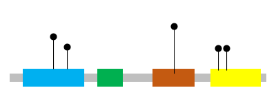

jsProteinmapper Mapping variant(s) to protein domains
This is a demo page for the jsProteinmapper which provides a subset of non-synonymous variants from COSMIC database (v84)$ for BRAF, PIK3CA, and TP53 genes for users to checkout the features of this widget.
Tip: search for BRAF, TP53 or PIK3CA to see the widget in action!
No gene loaded. Please search above.
Demo page instructions
- Different sample genes have different tooltip options - try them all! These are configurable in the library.
- BRAF has two variant tracks, one from COSMIC v84 and the other with example data. Details are provided in bar chart form.
- TP53 displays details of the variants in COSMIC v84 in table format within the tooltip.
- PIK3CA uses a pie chart in the tooltip.
Tooltips can be activated on mouseover or click. Select the desired behavior in the options window.
-
Controls / actions
- Zoom/pan X axis with scroll/drag, or touch events on the protein structure
- Double-click zooms in X or Y depending on target
- Mod- (ctrl-, shift-, cmd-) scroll to zoom the variant tracks, or touch events on the tracks
- Mod-click-and-drag to draw zoom rectangle
- Use the zoom buttons in the control panels, located in the upper right of each variant track
- Switch between linear and logarithmic scale for the variant tracks
- Show or hide the track control panels using the options window
Credits for demo data with permission from
- COSMIC (Catalogue Of Somatic Mutations In Cancer) - v84